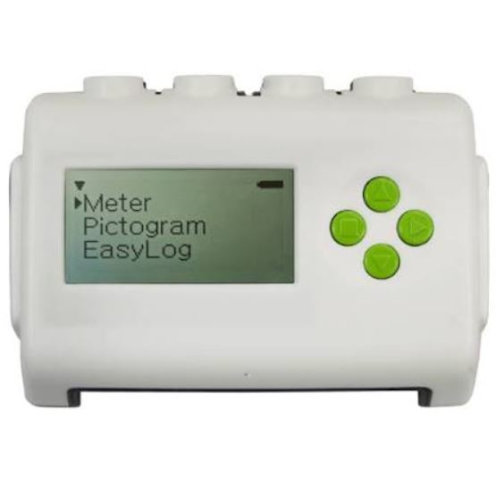

primena
Interklima
Preduzeće iz Vrnjačke Banje koje se bavi distribucijom prirodnog gasa, gde senzorski sistemi omogućavaju merenje protoka, pritiska i bezbedno praćenje mreže.
Saznaj višeMerenje · Analiza · Vizualizacija
Prikupljanje i obrada podataka sa senzora
Senzori registruju promene iz okruženja, svetlost, zvuk, temperaturu, pritisak i pretvaraju ih u električne ili digitalne signale. Zahvaljujući tome, elektronski sistemi „vide" realni svet i mogu da prilagode svoj rad uslovima u kojima se nalaze. Na ovoj stranici prikazana su merenja prikupljena senzorima i njihova obrada.
Preduzeće iz Vrnjačke Banje koje se bavi distribucijom prirodnog gasa, gde senzorski sistemi omogućavaju merenje protoka, pritiska i bezbedno praćenje mreže.
Saznaj višeAutobuska stanica i prevoznik iz Vrnjačke Banje sa dugom tradicijom, gde se senzori koriste za praćenje voznog parka, brojanje putnika i upravljanje saobraćajem.
Saznaj višeU industriji senzorski sistemi omogućavaju automatizaciju proizvodnje, kontrolu kvaliteta i upravljanje skladišnim i logističkim procesima. U medicini se koriste za nadzor vitalnih parametara, dijagnostiku i praćenje toka terapije.
Zbog svega toga senzori su danas jedan od nosećih tehnoloških elemenata od industrije i medicine, preko ekologije, do uređaja široke potrošnje. Njihov razvoj direktno podiže efikasnost, udobnost i sigurnost svakodnevnog života.

Za prikupljanje merenja korišćen je sistem EasySense sa odgovarajućim senzorima povezanim na data logger.
Idi na EasySenseTokom merenja data logger je beležio više parametara: vlažnost, svetlost, pritisak, zvuk i temperaturu. Podrazumevano su prikazana moja merenja (učitana automatski), a ispod možete prevući ili izabrati svoj CSV fajl kako biste videli obradu proizvoljnih podataka.
Očitane vrednosti su posmatrane kroz vreme kako bi se uočili obrasci i tendencije u promenama, uz poseban osvrt na međusobne odnose parametara. To omogućava potpunije razumevanje ponašanja sistema tokom vremena.
Na osnovu toga izdvajaju se ključni trenuci u kojima vrednosti značajno odstupaju, informacija koja je važna za unapređenje sistema, detekciju anomalija i donošenje odluka u upravljanju senzorskim sistemima.